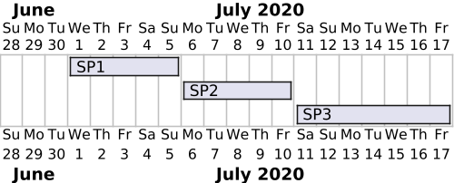
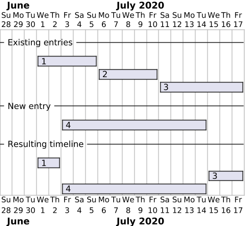
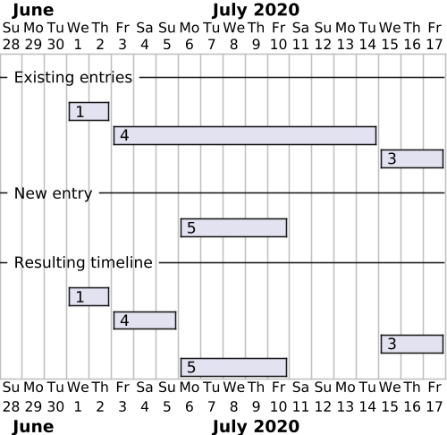

API Design
TLDR;
The Flexibility Information System API is a
Resource-oriented JSON-over-HTTP(s) Data API.
Design goals
Our design goals are
- simple and clear
- easy to use - APIs are for humans (developers)
- simple to maintain
- cache friendly (including invalidation)
- well-documented
- discoverable
- facilitates gradual rewrite from postgREST to a custom API implementation
JSON over HTTPS
We use JSON as the data format and HTTPS as the transport protocol. JSON is the de-facto standard for data exchange on the web. It is light-weight, fairly easy to read and versatile. It is not as rich as XML and simple as CSV, but basically all tooling around web APIs support JSON.
Synchronous and stateless
We use a synchronous request-response model. This means that the client sends a request to the server and waits for a response. The server processes the request and sends a response back to the client.
This is in contrast to the asynchronous models e.g. in the Elhub API (EMIF) where the client needs to poll the server for responses separately from the request.
Resource-oriented
We rely on resource-oriented design when designing our api.
Its core principle is to define named resources that can be manipulated using a small number of methods. The resources and methods are known as nouns and verbs of APIs.
Nouns are (collections of) resources, and verbs are realized via a combination
of path and HTTP method. We do not use Remote Procedure Call (RPC) style paths.
An example can be a controllable_unit.
| Verb | Path | HTTP Method | RPC Style |
|---|---|---|---|
| Create | /controllable_unit | POST | CreateControllableUnit |
| List | /controllable_unit | GET | ListControllableUnits |
| Read | /controllable_unit/{id} | GET | ReadControllableUnit |
| Update | /controllable_unit/{id} | PATCH | UpdateControllableUnit |
| Delete | /controllable_unit/{id} | DELETE | DeleteControllableUnit |
We do not use the PUT method simply because we do not need it.
This is in line with the design in the
JSON:API spec.
In case of actual RPC style methods, we use the Call verb.
typicode/json-server is very simple api design that has been used as a reference.
Common fields
We implement a few common fields on all resources. These are
| Field | Type | Description |
|---|---|---|
id |
bigint | Unique identifier |
recorded_at |
timestamp with time zone | Time the resource was last recorded (created or updated) |
recorded_by |
bigint | Id of the identity that last recorded the resource |
History
We provide history as a separate resource on the api. The history resource provide the same fields as the main resource, but with the addition and adjustments of a few of the fields.
| Field | Type | Description |
|---|---|---|
id |
bigint | Unique identifier of the historic record |
<resource>_id |
bigint | Id of the resource that this history is for |
replaced_at |
timestamp with time zone | Time the resource was replaced |
replaced_by |
bigint | Id of the identity that replaced the resource |
The history records are available via a resource path that appends _history to
the resource name. Example for controllable_unit.
The only allowed action/method is read/GET.
| Path | Methods | Description |
|---|---|---|
/controllable_unit_history |
GET | List all history records |
/controllable_unit_history/{id} |
GET | Get a specific history record |
/controllable_unit_history?controllable_unit_id=eq.{id} |
GET | List history records for a specific controllable unit |
/controllable_unit/{id}/history |
GET | Redirects (307) to the path shown above. |
Events and notifications
Every resource modification in the system leads to an event being recorded. Events contain data identifying precisely which resource was touched and what is the nature of the modification done.
The server then turns events into notifications that the user can read and acknowledge as part of the processes supported by the Flexibility Information System.
Events and notifications
are reachable in the API as regular resources like the others, i.e., through
the /event and /notification endpoint families.
Notices
Strongly enforcing consistency and closely following processes is a hard task in a system that is optimised for change and where users can make mistakes.
In order to store decently reliable data while still keeping a maintainable system in the long run, we generally make sure that new data entering the system are consistent with existing data, but we tolerate some level of temporary inconsistency or invalidity for some resources. This has several advantages, such as sparing us the need for advanced rollback mechanisms.
However, even if we do not enforce it as strictly in the database, we consider that such issues should be fixed eventually. This is the purpose of the notice resource. It detects inconsistencies or invalid states in ongoing processes and exposes them through the API for each user to see what actions on the system are expected from them. This allows making mistakes but also detecting and fixing them in a decent time, ensuring eventually strong consistency between the resources in the system in a flexible way.
Time dependent resources and fields
Some resources or fields are time dependent. We model timelines as a
collection of resources with valid time intervals defined by valid_from
(inclusive) and valid_to (exclusive). If a field is time-dependent, we model
it as a separate resource.
In the following sections we will use an example of controllable_unit that has
a service_provider relation that changes over time. This is modelled as a
separate resource controllable_unit_service_provider. In a tabular layout it
looks like this:
| id | controllable_unit_id | service_provider_id | valid_from | valid_to |
|---|---|---|---|---|
| 1 | 1 | 1 | 2020-07-01 | 2020-07-06 |
| 2 | 1 | 2 | 2020-07-06 | 2020-07-11 |
| 3 | 1 | 3 | 2020-07-11 | null |
The controllable_unit_id identifies a distinct timeline, while a specific
entry is identified by the id.
The following diagram shows how these three entries are layed out in the timeline.

Reading a timeline
If you want to see all entries in a timeline you need to query the collection
with a filter that identifies the timeline. For our example, that means a
specific controllable_unit_id, so the operation would look something like
this:
GET /controllable_unit_service_provider?controllable_unit_id=eq.1
Adding a new or updating a entry to the timeline
When adding a new entry to the timeline, you basically add a new resource like with other collections. However, the create operation will also modify or delete other entries to ensure a non-overlapping timeline.
Say we want to add the following entry to our example timeline:
{
"controllable_unit_id": 1,
"service_provider_id": 4,
"valid_from": "2020-07-03T00:00:00.000Z",
"valid_to": "2020-07-15T00:00:00.000Z"
}
The following diagram shows the timeline before and after adding the entry. The entries are identified by the id.

As shown, entry 2 is removed and entry 1 and 3 is modified to fit with the
new resource.
If the new entry is fully overlapped by an existing entry, then the create
will result in a gap in the timeline. As seen in the following diagram, entry
4 is modified and limited to the start of the new entry 5, leaving a gap
between 5 and 3.

Updating a entry is similar to adding a new entry. If the valid time range is increased, then other entries will be modified or deleted to ensure a non-overlapping timeline.
If you want to update a resource, like set an end date on the current relation
(where valid_to is null), then you would do a update operation on that specific
resource.
{
"valid_to": "2020-08-15T00:00:00.000Z"
}
Gaps are allowed
The update mechanisms does not care about gaps in the timeline, they are generally allowed. This means that the logic does not adjust the timeline (i.e. update other entries) if a entry is deleted or its valid time is decreased.
History on time-dependent resources
We provide history on time-dependent resources as well. This follows the same pattern as the regular history. Time dependent resources with history provides bi-temporal data.
Restoring a timeline
Restoring a timeline is done with regular updates. You would need to do a
PATCH operations on the specific entries. The typical workflow would be:
- List the history of the timeline (possibly filtered by record time)
- Find the history entries that should to be restored
- Do a
PATCHoperation on the specific entries with the old data to restore it
Deleted entries are only soft-deleted in the system by setting valid_from and
valid_to as null. These resources also accept PATCH operations. A PATCH to
restore a deleted resource requires that the valid_from is set to a non-null
value.
No revert or rollback operations
We do not provide a revert operation that restores a timeline to a specific point in time. Restore must be done on the individual entries in sequence.
We do not provide a rollback operation to undo all the changes that
occurred due to a specific PATCH or POST. Rollback operations are hard
to get right in situations where there could be multiple changes to the
timeline since the point in time you want to rollback to.
Rich text fields
Some text fields actually support rich text content. For simplicity, we chose HTML as the format of rich text fields, as it is a very common format readily available in all web browsers, which are likely to be the host of the frontend environments that will interact with our API.
In such cases, where data stored in a system must be interpreted in order to be displayed, this data should always go through a sanitisation step before being used. This sanitisation can happen one or several times, before storing the data or after retrieving it. For now, rich text fields are a test feature, so we choose not to validate their content on the server side. It is therefore left to the responsibility of our users to sanitise the content of rich text fields before exploiting it. Note that the default user interface we offer as part of our test platform use components performing the expected sanitisation.
Naming and casing
Singular vs plural is basically a matter of taste. We just had to pick one. We use singular names on all resources. This is a design choice to make the API more consistent with the data model in the database, where the singular names are nice.
Another way we make the API consistent with the database is by using
snake_case for resource/collection, field names and enumerations. This allows
us to have the same name across all layers.
Identifiers
We use id as the primary identifier for all resources. The
id is a unique integer generated by a sequence in the system. It is a
surrogate key.
Where relevant we also store natural keys or other identifiers on the
resources. If so, these are usually stored in a field name business_id. If the
resources support multiple types of identifiers, we include a business_id_type
field as part of the identifier.
Finding a resource by this identifier can be done by filtering on the
business_id field. E.g. GET /controllable_unit?business_id=eq.123456.
Discoverability and documentation via OpenAPI 3.1.0
Provide discoverability via OpeanAPI 3.1.0 document and generated documentation. We are using 3.1 over 3.0 due to the full support of JSON Schema.
We are following a spec-first approach where we define the API in an OpenAPI document first and implement later. This allows us to switch implementations while having a stable api/document. It comes at the cost of having to maintain the document manually. This maintenance is however eased through the use of templating to avoid repeating ourselves and making mistakes. Templating also normalises the API by making sure similar operations lead to similar endpoints.
Note on RESTful and HATEOAS
We cannot talk about API design without talking about RESTful APIs and HATEOAS.
REST stands for REpresentational State Transfer. RESTful APIs are APIs that adhere to the REST architectural constraints. First coined by Roy Fielding in his doctoral dissertation, REST is a set of constraints that, when followed, enable a loose coupling between clients and servers. This loose coupling is achieved by having the server send hypermedia links to the client, which the client can then use to navigate the API. This is known as HATEOAS, or Hypermedia As The Engine Of Application State.
Implemeting a RESTful API is not easy, and most APIs that claim to be RESTful are not. For some good reading on this topic, check out the following links:
We believe that RESTful APIs are really powerful, but complex. The true value of a RESTful API is evolveability. On the Richardson Maturity Model that evolveability is only achieved at level 3, with a true Hypermedia API. For that to work, we put a lot of constraints on clients. As an example, our clients would not be able to rely on fixed resource names or hierarchies.
We are aiming for level 2 on the Richardson Maturity Model. We are ok with a higher degree of coupling between clients and servers.
But we try not to call our API REST or RESTful since the terms have very different
meanings depending on who you ask. We are calling our API style a
Data API.
Links
One of the major benefits of the REST architectural style is that links are very explicit by being part of the response. Our API does not return links, but we provides information on how to navigate the API in the documentation. The OpenAPI spec is a bit limited in this regard. The Link Object also doesn't display well (or at all) in the generated docs tools.
We provide a links object in the 20* response to Read requests, but omit
it in List, Create and Update requests. This is just to limit the amount
of toil/busywork related to maintaining the OpenAPI document.
We also document the link as part of the textual field description in the OpenAPI schemas.